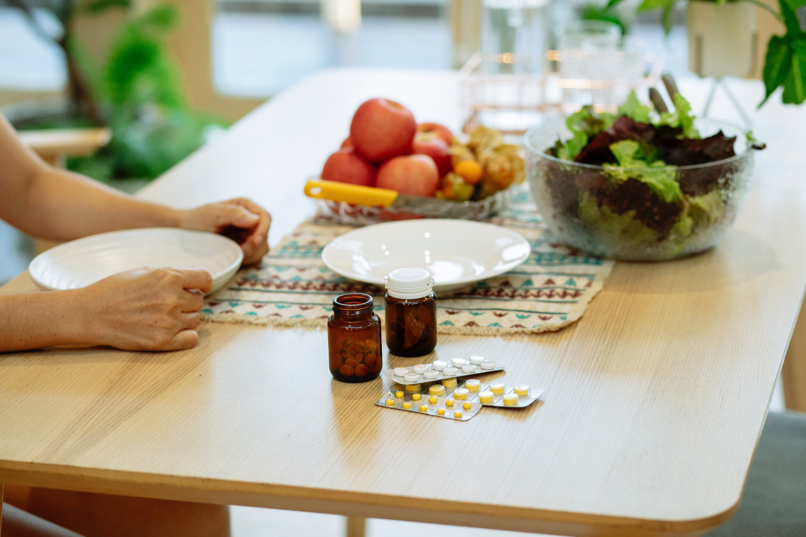
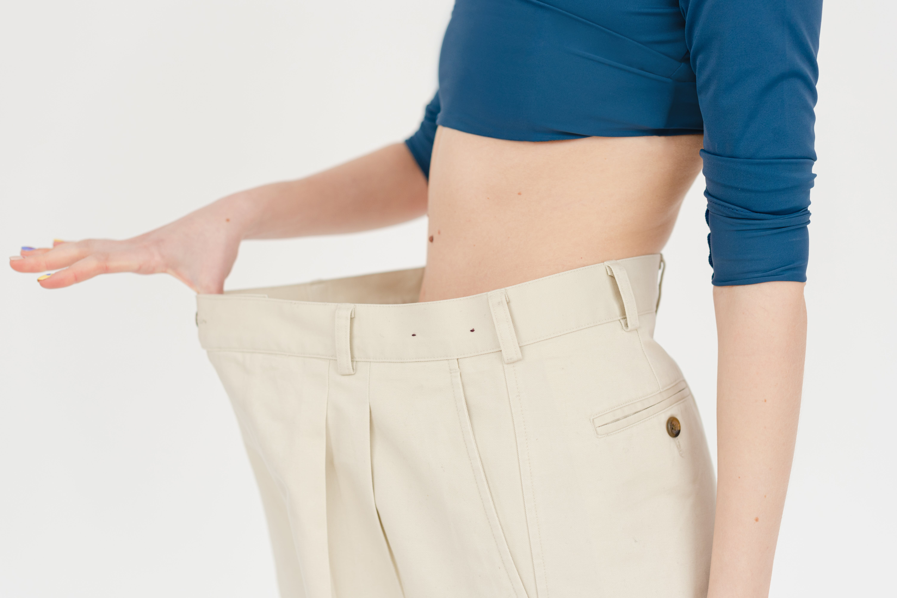
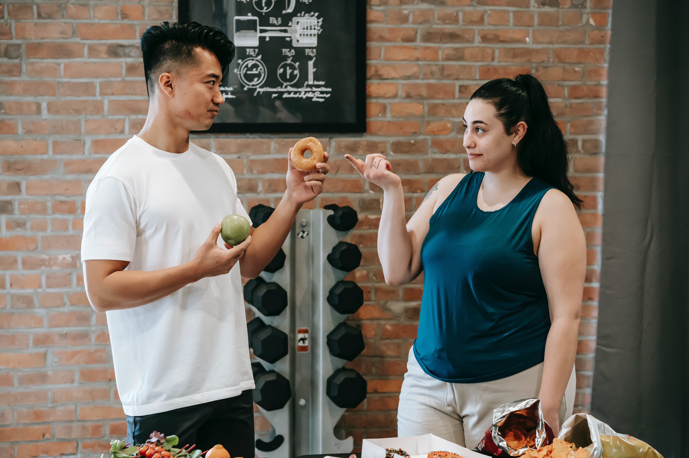
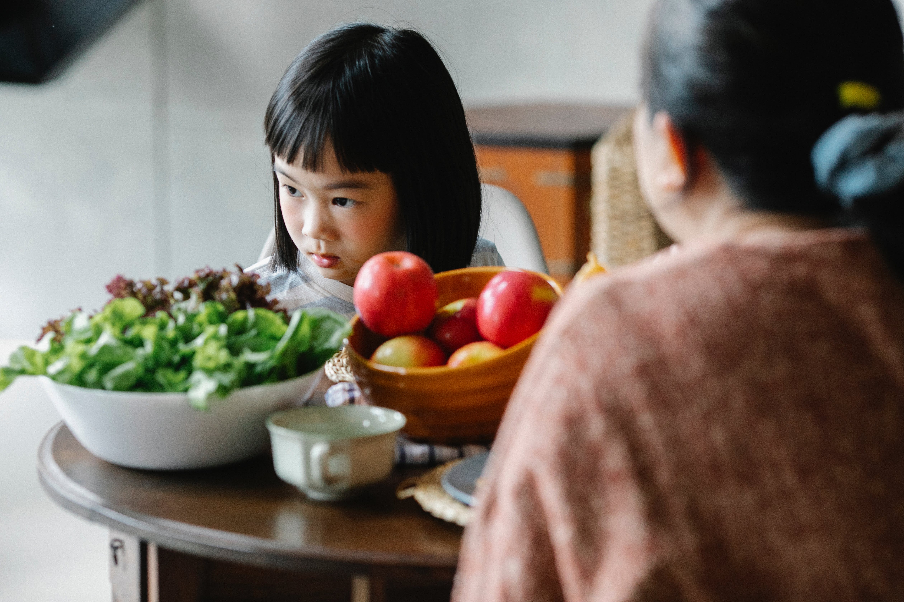

Hastalıklarda klinik beslenme tedavisi

Hastalıklarda beslenme çok önemlidir. Hastalıklarda beslenme yaklaşımları hastalığın gelişmesini önlemekle birlikte, hastalığın tedavi sürecinde önemli bir rol almaktadır. Hastalıklarda beslenme programlarının hastanın yaşam kalitesini artırmakta, hastalığın seyrini yavaşlatmakta ve iyileşme sürecini hızlandırmaktadır. Hastalıklarda beslenme protokolleri birçok hastalıktan korunmak, hastalık meydana geldikten sonra gelişmesini yavaşlatmak ve iyileşmesini hızlandırmak için oldukça önemli bir unsurdur. Bugün kronik kompleks hastalıklarının üzerinde beslenme alışkanlıklarının çok büyük bir etkisi olduğu bilinmektedir. Genetiğinizle birlikte çevresel koşullar ve yedikleriniz ileri süreçteki hayat kalitenizi belirleyecektir.

Kilo verebilmek ve kilo alabilmek çeşitli yöntemlere bağlı olarak mümkün olsa da önemli olan sağlıklı bir şekilde kilo almak ve sağlıklı bir şekilde kilo vermektir. Beslenme insanın hem fiziki hem de psikolojik ihtiyaçları için çok önemlidir. Kişi kendine uygun bir beslenme düzeni oturtmalı ve buna bağlı kalarak gerekirse egzersiz ve sporu da hayatının içerisine katmalıdır. Kilo vermek ve kilo almakla beraber vücutta çeşitli dengeler değişir. Bunun sonucunda ise bazı durumlar ortaya çıkabilir. Niyeti kilo almak ya da kilo vermek olan bir kişi bunu mutlaka doğru bilgiler ışında uzman bir doktor veya diyetisyen ile planlamalıdır. Bu bazı hastalıkların önüne geçmek ve yanlış kilo verimi, yanlış kilo alımı gibi durumların olmamasını sağlamak içindir.
Tip-1 Diyabette Beslenme ve Karbonhidrat Sayımı

Diyabet tedavisinde kan şekeri kontrolünü sağlamak için sağlıklı beslenme alışkanlıklarının kazanılması önemlidir. Diyabeti olmayan bireylerde olduğu gibi diyabetli bireylerinde yeterli ve dengeli beslenmeyi öğrenmesi ve öğrendiklerini günlük yaşamda uygulaması sağlıklı bir yaşamın temelini oluşturur. Diyabet tedavisinin amacı kan şekeri düzeyinizi normal sınırlar içerisinde tutarak, kısa veya uzun dönemde oluşabilecek sağlık sorunlarını önlemek veya geciktirmektir. yaşamınızda başta beslenme alışkanlıklarınız olmak üzere bazı değişikliklerin oluşmasını gerektirmektedir. Kan şekerini oluşturan asıl kaynak yiyeceklerdir ve bu nedenle sağlıklı beslenme diyabette tedavinin temelidir.

Sporcu uygun antrenmanlar eşliğinde, uygun yaşam tarzı ile sağlıklı beslendiğinde performansı olumlu şekilde artar. Kişinin beslenme düzenini etkileyen faktörler arasında kişinin fiziksel aktivite durumu da önem taşır. Aktif spor hayatı olan kişiler de yapılan sporun çeşidi, yapılma süresi ve sıklığı da beslenme düzenini ve besin gereksinmelerini etkiler.
Sporcunun aldığı sıvıların ve makro besinlerin türüne, miktarına ve zamanına önem vermektedir. Ek olarak vitamin, mineral ve supplement desteklerinin nasıl ve ne kadar kullanılması gerektiğini belirler. Enerji ve besin ögeleri gereksinimleri yaşa, cinsiyete, ağırlığa, boya, yapılan spor dalına ve sıklığına göre farklılık gösterir. Yapılan spor hangi branşta olursa olsun yaptığınız spora göre beslenme programına sahip olmanız gerekmektedir.

Beslenme, büyüme, gelişme, insan sağlığının korunması ve iyileştirilmesi
üzerinde etkili olduğu kanıtlanmış olan önemli faktörlerden birisidir. Bu nedenle
yaşam boyu yeterli ve dengeli beslenme herkes için gereklidir. Bununla birlikte,
insan yaşamının başlangıcı olan gebelikten itibaren emziklilik sürecini de kapsayarak, büyüme ve gelişmenin en hızlı olduğu bebeklik, çocukluk ve adolesan
dönemleri, yeterli ve dengeli beslenmenin daha da önem kazandığı süreçlerdir.
Bütün bu süreçler, yeni hücre ve doku yapımının hızla gerçekleştiği, organların
geliştiği, bu nedenle de besin ögelerine olan gereksinimin arttığı süreçlerdir.